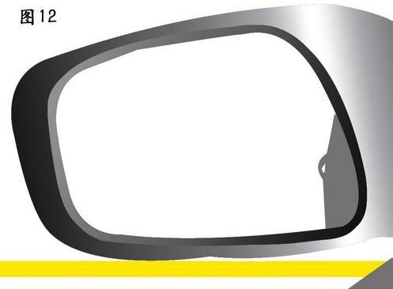

一、操作要求
考试过程中，车辆进退途中不得停车。从道路一端控制线(车身压控制线)倒入车库停车，再前进出库向另一端驶过控制线后倒入车库停车，最后前进驶出车库。

二、评判标准
 不按规定路线、顺序行驶的，不合格；
不按规定路线、顺序行驶的，不合格；
 车身出线的，不合格；
车身出线的，不合格；
 倒库不入的，不合格；
倒库不入的，不合格；
 中途停车的，不合格；
中途停车的，不合格；
 超过4分钟，不合格。
超过4分钟，不合格。
三、关键点
 没有了参照物(竹竿)，就只能通过后视镜来观察车辆所处的位置。因此，平时在练习时，必须强化对后视镜的利用；
没有了参照物(竹竿)，就只能通过后视镜来观察车辆所处的位置。因此，平时在练习时，必须强化对后视镜的利用；
 考试时不能停车，对离合器的使用就提出更高要求。平时练习时一定要多使用离合器，学会灵活运用离合器来控制车速，做到既慢，又不停车，时速保持在5公里左右，缓慢完成整个倒杆动作。
考试时不能停车，对离合器的使用就提出更高要求。平时练习时一定要多使用离合器，学会灵活运用离合器来控制车速，做到既慢，又不停车，时速保持在5公里左右，缓慢完成整个倒杆动作。
四、操作方法
右倒入库
 挂倒档，轻抬离合，缓慢后移，观察左后视镜，当左起点感应线在左后视镜(如下图)位置时方向盘左打死。
挂倒档，轻抬离合，缓慢后移，观察左后视镜，当左起点感应线在左后视镜(如下图)位置时方向盘左打死。

 转向盘一直打死着继续后移，中间不能停车，扭头观察右后视镜，看最右边线露出后，始终保持车身与库角距离大概30CM(如图5)，小于30厘米时回半圈，继续后移，当库角消失在右后视镜下沿时继续向右打死方向盘，继续后移，观察右后视镜库的边线与车身平行时(如图6)，方向盘赶紧回正，调正车身(车尾靠库的右边线近往左打方向盘调整，相反，与库的左边线近往右打方向盘调整，也就是右近左打，左近右打，反方向打方向盘就行)，边调整边倒库入底。
转向盘一直打死着继续后移，中间不能停车，扭头观察右后视镜，看最右边线露出后，始终保持车身与库角距离大概30CM(如图5)，小于30厘米时回半圈，继续后移，当库角消失在右后视镜下沿时继续向右打死方向盘，继续后移，观察右后视镜库的边线与车身平行时(如图6)，方向盘赶紧回正，调正车身(车尾靠库的右边线近往左打方向盘调整，相反，与库的左边线近往右打方向盘调整，也就是右近左打，左近右打，反方向打方向盘就行)，边调整边倒库入底。
 此时开始看左后视镜，在保持车身与库的边线平行的同时，速度最后慢一些，边后移边观察左后视镜，当库前沿线出现在左视镜(如图7)位置时，停车，直到此时，右倒库完成了。
此时开始看左后视镜，在保持车身与库的边线平行的同时，速度最后慢一些，边后移边观察左后视镜，当库前沿线出现在左视镜(如图7)位置时，停车，直到此时，右倒库完成了。
 开始下一步，出库，挂一档缓慢前行，当车盖前端刚看不到七米线时(如图8)，方向盘向左打死，眼看正前方，当车身正时，回正方向盘，前车轮要过左起始点感应线，停车准备左倒库。
开始下一步，出库，挂一档缓慢前行，当车盖前端刚看不到七米线时(如图8)，方向盘向左打死，眼看正前方，当车身正时，回正方向盘，前车轮要过左起始点感应线，停车准备左倒库。
左倒入库
 挂倒档，轻抬离合，缓慢后移，观察左后视镜，当左起点感应线在左后视镜(如图9)位置时【比右倒库的位置稍微小点】方向盘左打死。
挂倒档，轻抬离合，缓慢后移，观察左后视镜，当左起点感应线在左后视镜(如图9)位置时【比右倒库的位置稍微小点】方向盘左打死。
 转向盘一直打死着向后移，中间别停车，观察左后视镜，看最左边线露出后，始终保持车身与库角距离大概30CM(如图10)，小于30厘米时回半圈，继续后移，当库角消失在左后视镜下沿时继续向左打死方向盘，继续后移，观察左后视镜库的边线与车身平行时(如图11)，方向盘赶紧回正，调正车身边调整边倒库入底。
转向盘一直打死着向后移，中间别停车，观察左后视镜，看最左边线露出后，始终保持车身与库角距离大概30CM(如图10)，小于30厘米时回半圈，继续后移，当库角消失在左后视镜下沿时继续向左打死方向盘，继续后移，观察左后视镜库的边线与车身平行时(如图11)，方向盘赶紧回正，调正车身边调整边倒库入底。
 看左后视镜，在保持车身与库的边线平行的同时，边后移边观察左后视镜，当库前沿线出现在左视镜(如图12)位置时，停车，左倒库完成。
看左后视镜，在保持车身与库的边线平行的同时，边后移边观察左后视镜，当库前沿线出现在左视镜(如图12)位置时，停车，左倒库完成。

 最后一步，出库，挂一档缓慢前行，当车盖前端刚看不到七米线时(如图13)，方向盘向右打死，眼看正前方，当车身正时，回正方向盘，此时，已经听到广播啦“考试合格，请下车”，恭喜，但要做完整，不要太早高兴，前车轮要过右起始点感应线，停车，挂空挡，拉手刹，熄火，下车，走人，进入三项考试等待区。
最后一步，出库，挂一档缓慢前行，当车盖前端刚看不到七米线时(如图13)，方向盘向右打死，眼看正前方，当车身正时，回正方向盘，此时，已经听到广播啦“考试合格，请下车”，恭喜，但要做完整，不要太早高兴，前车轮要过右起始点感应线，停车，挂空挡，拉手刹，熄火，下车，走人，进入三项考试等待区。